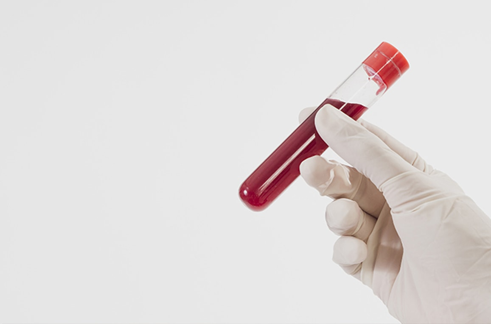

Ao verificar que há sintomas iguais ou parecidos aos citados nessa cartilha, a pessoa deverá procurar o mais rápido possível uma Unidade Básica de Saúde para fazer o teste rápido, método prático e com resultados imediatos realizados pelo(a) enfermeiro(a).

A pessoa diagnosticada com sífilis deverá comunicar ao parceiro ou parceira para que também façam exames e o tratamento adequado quando necessário.